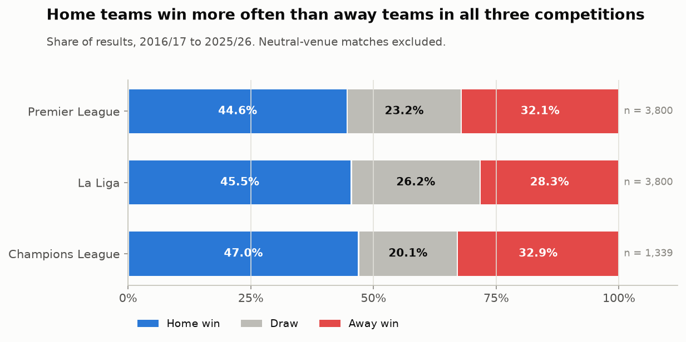
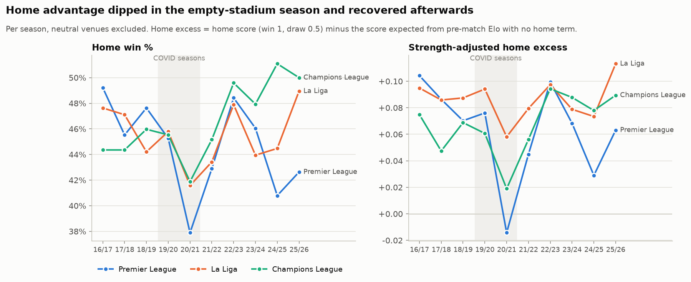
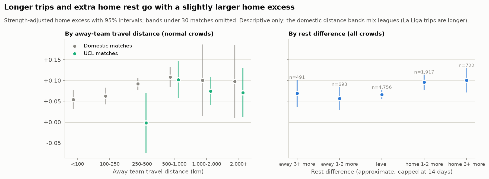
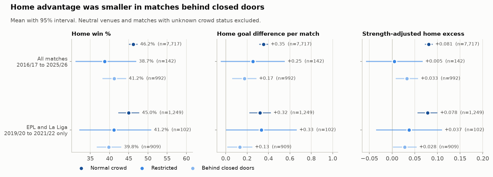
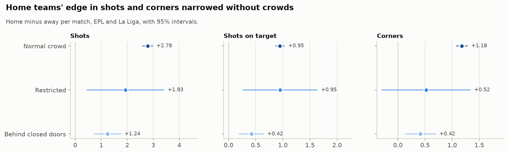
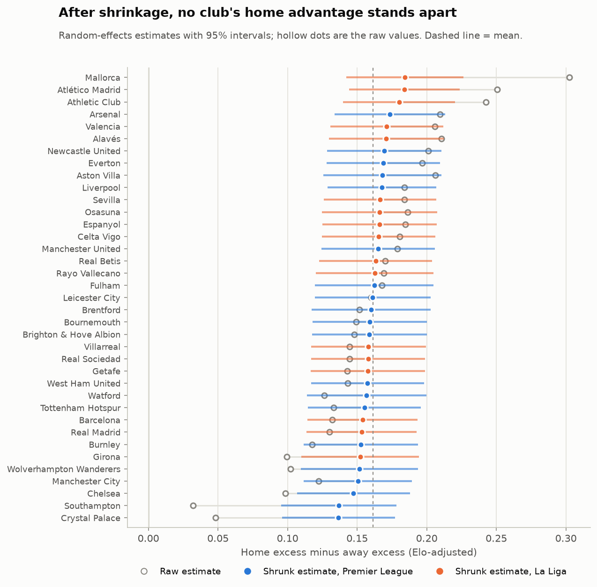
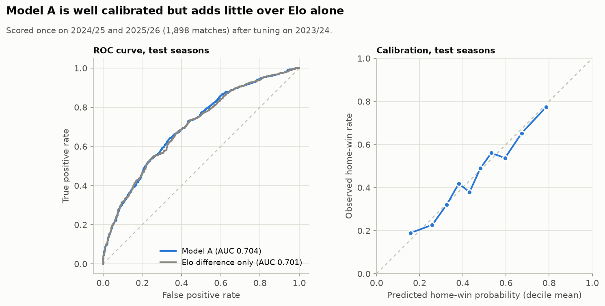
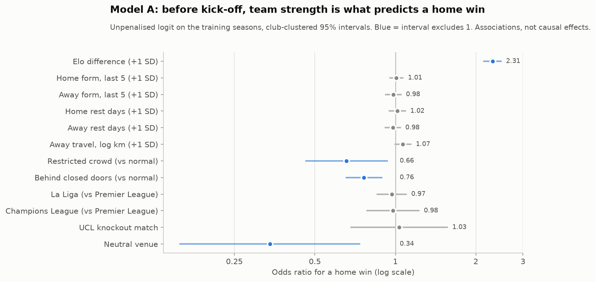
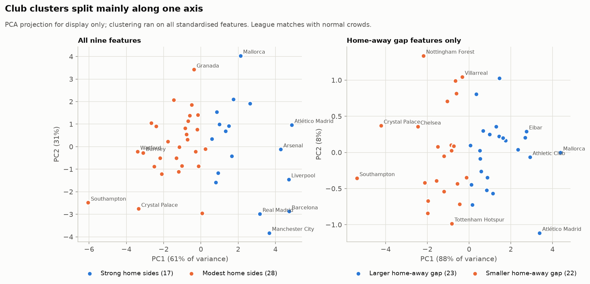

Is home advantage real? What ten seasons and an empty-stadium experiment say
I collected 8,972 matches from the Premier League, La Liga and the Champions League, rated every team before kick-off, and used COVID-19's closed doors to test how much of the home edge comes from the crowd.
1The question
Everyone in football "knows" that playing at home helps. But most home-advantage numbers you see are misleading, because the clubs that win most at home are simply the best clubs. Manchester City win a lot at home; they also win a lot away.
So this project asks three narrower questions:
- Between two equally strong teams, how much is playing at home worth?
- Has that edge changed over the last decade, and does it differ between competitions or clubs?
- When COVID-19 forced matches behind closed doors, how much of the edge disappeared?
The COVID period is the interesting part. For about a season and a half, the crowd was removed while the stadium, the travel and the referees stayed the same. It is the closest football has come to a natural experiment on the crowd.
2Collecting the data
Everything comes from free, public sources that anyone can download again:
- football-data.co.uk for Premier League and La Liga results and match statistics (shots, shots on target, corners, fouls, cards, and the referee's name for the Premier League).
- openfootball on GitHub for Champions League results, stages and dates, and for the domestic cup and Europa League fixtures used to count rest days.
- A hand-built table of COVID-19 crowd rules for each country and period, with sources, because per-match attendance is not available from any free, stable source.
- Stadium coordinates for every club, to measure how far the away team travelled.
| Competition | Seasons | Matches | What we have |
|---|---|---|---|
| Premier League | 10 | 3,800 | Results, match statistics, referee |
| La Liga | 10 | 3,800 | Results, match statistics |
| Champions League | 10 | 1,372 | Results and stages only |
| Total | 10 | 8,972 |
The pipeline downloads each file once, records where it came from in a manifest, and never edits raw files by hand.
3Cleaning and checking
The raw files go through three layers: raw downloads, one cleaned match table, and a final "gold" table with every feature. The main cleaning steps were:
- One name per club. "Man United", "Manchester Utd" and "Manchester United FC" all become one club ID, through an alias table.
- Neutral venues flagged. 33 matches (finals, the Lisbon 2020 mini-tournament, ties moved during COVID) had no real home team, so they are left out of every home-advantage measure.
- 90-minute scores for knockouts. Extra time and penalty shoot-outs are stored separately so every match is scored the same way.
- Crowd status for every match: normal, restricted, closed doors, or unknown, joined from the rules table by country and date.
Then every season was checked against the real world. The rebuilt league tables match the published final tables for all 400 team-seasons, every Premier League and La Liga score agrees with a second independent source, and the Champions League structure (groups, two-legged ties, who went through, the winner) matches what happened. If a hard check fails, the pipeline stops before writing anything.
4Feature engineering
The most important feature is team strength before kick-off. I used an Elo rating, the same idea used in chess: each team has a rating, it goes up after a win and down after a loss, and bigger upsets move it more. Ratings use only earlier matches, so nothing from the future leaks in.
From the ratings comes the measure used throughout the project:
Home excess = the home side's actual result − the result Elo expected if there were no home advantage. If two equal teams meet, Elo expects a draw on average, so anything above that is home advantage. This removes "good teams win more" from the picture.
The other features, all known before kick-off:
| Feature | What it captures |
|---|---|
| Elo difference | How much stronger the home side is |
| Recent form | Points from each team's previous five matches |
| Rest days | Days since each team's last match |
| Travel distance | Kilometres between the two stadiums |
| Crowd status | Normal, restricted or closed doors |
| Competition, knockout, neutral venue | The context of the match |
5Exploring the data
First, the plain picture: home teams win more than away teams in all three competitions.

Once team strength is taken out, the home edge between equal teams with normal crowds is +0.30 goals per match in the Premier League, +0.38 in La Liga and +0.44 in the Champions League. Over a 19-match home season, +0.30 goals adds up to about six goals of goal difference.
Has it been fading, as some people claim? Not in this decade. With normal crowds, it changes by −0.001 goals per season, which is effectively zero. The one visible dip is the empty-stadium period.

Travel and rest barely matter. Longer domestic trips go with slightly better home results, but the effect is small and not reliable once many tests are accounted for. Rest days show nothing once team strength is controlled.

6The empty-stadium test
Home sides won 46.2% of matches with normal crowds and 41.2% behind closed doors.

A raw comparison could be fooled if different teams happened to play at home in those months, so I used a regression that holds team strength and competition equal, with standard errors grouped by club. Because I ran 14 main tests, every p-value is corrected for multiple testing (the Holm method), so one lucky result cannot slip through.
| What changed behind closed doors | Change | 95% interval | Corrected p |
|---|---|---|---|
| Home goal-difference edge | −0.20 goals | −0.31 to −0.08 | 0.006 |
| Odds of a home win | −22% | ||
| Away side's extra yellow cards | −0.22 per match | 0.015 | |
| Difference between competitions | none | 0.66 |
So the empty stadiums took away about two-thirds of the normal home advantage. Home teams also lost some of their edge in shots, shots on target and corners, and the away side's extra yellow cards (about 0.22 a match with crowds) disappeared.

When I compare only matches within the same season, the drop keeps its direction (−0.14 goals) but the interval crosses zero. Closed doors came with packed fixture lists, five substitutes and no travelling fans, so "behind closed doors" means that whole package. The card change fits referees being swayed by crowds, but it also fits away teams defending differently. The data cannot separate the two.
The drop was similar in every competition, and no single club stands out as a true "fortress": after adjusting for how few matches each club has, no club's home advantage is reliably different from the average.

7Building the models
I built two kinds of model with different jobs. Model A predicts: using only what is known before kick-off, will the home side win? Model B explains: given what happened on the pitch, how does the result relate to the match statistics?
Model A: predicting a home win
I chose logistic regression on purpose. It is not the most powerful model, but every coefficient can be read as "this factor multiplies the odds of a home win by X", which matters when the goal is to understand home advantage, not just to predict it.
To keep the test honest, the data are split by time, never at random, so the model is always judged on seasons it has never seen:
| Set | Seasons | Matches | Used for |
|---|---|---|---|
| Train | 2016/17 to 2022/23 | 6,189 | Fitting |
| Validation | 2023/24 | 885 | Choosing settings |
| Test | 2024/25 to 2025/26 | 1,898 | One final evaluation |
Results on the test seasons:
| Model | Accuracy | ROC-AUC | Log loss | Brier |
|---|---|---|---|---|
| Model A (all features) | 0.648 | 0.704 | 0.622 | 0.217 |
| Elo difference only | 0.654 | 0.701 | 0.623 | 0.217 |
| Always guess "no home win" | 0.545 | 0.500 | 0.689 | 0.248 |
The model clearly beats guessing, and its probabilities are well calibrated: when it says 60%, the home side wins about 60% of the time. But it barely beats Elo on its own. That is a finding, not a failure: before kick-off, team strength explains almost everything a model can predict, and form, rest and travel add nothing on top.

Reading the coefficients as odds ratios:

- Strength: a home side one standard deviation stronger (about 186 Elo points) has 2.3× the odds of winning.
- Empty stadium: closed doors cut the odds of a home win to 0.76×, about a quarter lower.
- Form, rest, competition: all close to 1 and not significant once strength is included.
Home, draw or away
A three-way version predicts all three outcomes. Its probabilities are honest (test accuracy 53% against 46% for always picking "home win"), but a draw is almost never the single most likely result, picked in only 5 of 1,898 test matches. That is normal for football models: draws happen about a quarter of the time but are rarely the favourite.
Model B: what happens on the pitch
Model B adds in-match statistics for 7,579 league matches, so it can only explain, not predict. Shots on target dominate (5× the odds per standard deviation). The surprise: adding the statistics did not explain away the closed-doors effect. Even with the same shot balance, home sides turned it into fewer wins behind closed doors.
8Grouping the clubs
Finally, I used K-Means clustering on the 45 clubs with enough matches, to see if there are "types" of home team. The method picked two groups, but they split mainly by quality: strong home sides (17 clubs, 1.97 home points per game) and modest home sides (28 clubs, 1.40). When clustering on the home-away gap alone, the two groups turned out to be two halves of one continuum, not genuinely different kinds of club.

9The dashboard
To make the results explorable, everything is wrapped in a Streamlit dashboard with eight pages: the overview, trends over time, the COVID experiment, competition comparison, a team explorer, travel and rest, clusters and the models. It reads only the small summary tables committed to the repository, so it runs straight after cloning:
git clone https://github.com/Anubhavlfc/Home-Match-Advantage-Analyzer
cd Home-Match-Advantage-Analyzer
pip install -r requirements.txt
streamlit run dashboard/app.pyTo rebuild everything from the raw data instead, the full pipeline runs with python -m src.pipeline --all, followed by the feature, analysis and model steps described in the README.
10Limitations and next steps
The biggest gap is attendance: crowd status comes from published rules, not head counts, so a "restricted" match could mean 2,000 fans or 10,000. Champions League matches have no shot or card data, and rest days are only complete for 2020/21 to 2024/25. Next steps would be real attendance figures, expected-goals data to separate chance quality from finishing, and more leagues to tell whether the closed-doors drop is a crowd effect or a one-off season effect.
11Conclusion
Home advantage is real and steady: about a third of a goal per match between equal teams, the same across the decade and across competitions, with no club proven to be special. When the crowds disappeared, about two-thirds of it went with them, together with the away side's extra yellow cards, although the strictest comparison cannot rule out other things that changed in those seasons. And if you want to predict a match before it starts, how good the two teams are matters far more than anything else.
The code, data pipeline, full reports and dashboard are on GitHub. The detailed write-ups behind this article are the exploratory analysis, the statistical tests and the machine learning report.